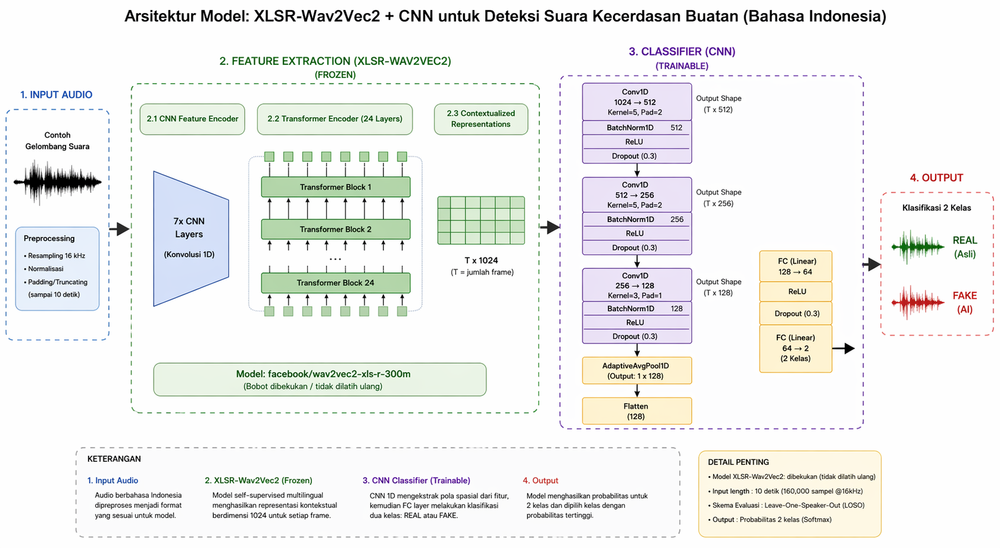

AI & Data
XLSR-Wav2Vec2 • CNN
Indo-AD: Deteksi Deepfake Audio Berbahasa Indonesia
Riset skripsi yang membangun model untuk mendeteksi suara deepfake suara palsu hasil rekayasa AI berbahasa Indonesia, menggunakan Self-Supervised Learning dan CNN classifier (dua teknik machine learning untuk mengenali pola suara). Riset ini merespons kasus penipuan lewat peniruan suara (voice cloning) yang pernah merugikan korban hingga Rp7,8 triliun.
Diskusikan detail proyek